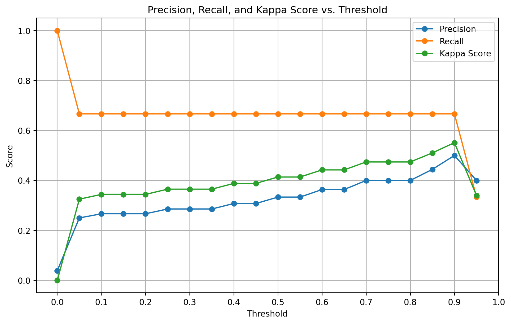

# Import libraries
import pandas as pd
from sklearn.model_selection import train_test_split, cross_val_score, GridSearchCV
from sklearn.ensemble import RandomForestClassifier, GradientBoostingClassifier
from sklearn.metrics import classification_report, cohen_kappa_score, confusion_matrix
from imblearn.over_sampling import SMOTE
from xgboost import XGBClassifier
import numpy as np
import matplotlib.pyplot as plt
import seaborn as sns
# Load the dataset
data = pd.read_csv('data/ca1-dataset.csv')Analyzing and Optimizing Machine Learning Models for Off-Task Behavior Detection
Off-task behavior detection
Educational data mining
Machine learning in education
Class imbalance handling
SMOTE (Synthetic Minority Over-sampling Technique)
Gradient Boosting Classifier
Random Forest Classifier
XGBoost
Threshold optimization
Kappa score
F1-score optimization
Cross-validation in educational models
Hyperparameter tuning
Student engagement analysis
Intelligent tutoring systems
Behavioral pattern recognition
Predictive modeling in education
Educational technology ethics
A machine learning model to detect off-task behavior
Abstract
Detecting off-task behavior in educational settings is essential for enhancing student engagement and learning outcomes. This study presents a comprehensive analysis of machine learning models designed to classify off-task behavior using a real-world educational dataset. I explore the challenges of working with imbalanced datasets and evaluate the performance of various classifiers, including Random Forest, XGBoost, and Gradient Boosting. Through a series of experiments involving data resampling, hyperparameter tuning, threshold optimization, and performance evaluation using metrics like Cohen’s Kappa score, I aim to optimize model performance and provide insights into the complexities of behavior detection in educational contexts.
Introduction
In the field of educational data mining, detecting off-task behavior is crucial for understanding student engagement and improving learning outcomes. Off-task behavior refers to any student actions unrelated to the learning objectives, which can hinder the educational process. Traditional methods of identifying off-task behavior are often subjective and resource-intensive. Therefore, developing automated, accurate detection methods using machine learning can significantly benefit educators and learners.
This study presents an in-depth analysis of machine learning models designed to classify off-task behavior in educational settings. I explore the challenges of working with imbalanced datasets and evaluate the performance of various classifiers, including Random Forest, XGBoost, and Gradient Boosting. Through experiments and analyses, I aim to optimize model performance and provide insights into the complexities of behavior detection in educational contexts.
Literature Review
Background on Off-Task Behavior Detection
Off-task behavior detection in educational settings has been an area of active research for several years, with studies employing various approaches to identify and analyze student disengagement, particularly in the context of algebra tutoring systems.
Traditional Methods
Early research relied heavily on human observation and self-reporting techniques. While these methods provided rich qualitative data, they were often subjective, time-consuming, and not scalable for large-scale implementation (Baker 2007).
Machine Learning Approaches
The advent of intelligent tutoring systems and educational software has enabled more sophisticated detection methods using machine learning:
Log File Analysis: Researchers have developed models that analyze student interaction logs to identify patterns indicative of off-task behavior. These models often utilize features such as time spent on tasks, response correctness, and help-seeking behavior (Cocea and Weibelzahl 2009; Pardos et al. 2014).
Multimodal Detection: Some studies have incorporated multiple data sources to create more comprehensive off-task behavior detection systems (Bosch et al. 2015).
Temporal Models: Researchers have explored the use of sequential models to capture the temporal aspects of student behavior and improve detection accuracy (Liu and Koedinger 2017).
Challenges in Off-Task Behavior Detection
Several challenges have been identified in the field:
Class Imbalance: Off-task behavior is typically less frequent than on-task behavior, leading to imbalanced datasets that can skew model performance (Pardos et al. 2014).
Context Sensitivity: The definition of off-task behavior can vary depending on the learning environment and taskmaking it difficult to create universally applicable models (Baker 2007).
Privacy Concerns: As detection methods become more sophisticated, they often require more invasive data collection, raising ethical and privacy issues (Bosch et al. 2015). This is particularly relevant in educational settings where student data protection is paramount.
Real-time Detection: Developing models that can detect off-task behavior in real-time to enable immediate intervention remains a significant challenge (Liu and Koedinger 2017), especially in resource-constrained educational environments.
Recent Trends
Recent research has focused on:
Personalized Models: Developing detection systems that adapt to individual student behaviors and learning patterns (Pardos et al. 2014).
Interpretable AI: Creating models that not only detect off-task behavior but also provide insights into the reasons behind it (Cocea and Weibelzahl 2009). This trend aligns with this study’s focus on model comparison and evaluation metrics, as interpretable models can offer valuable insights for educators.
Integration with Intervention Strategies: Combining detection models with automated intervention systems to re-engage students in real-time (Liu and Koedinger 2017).
Educational Context in Algebra Tutoring Systems
In the context of algebra tutoring systems, off-task behavior can significantly impact learning outcomes. Cocea and Weibelzahl found that students who frequently engage in off-task behavior in mathematics tutoring systems show lower learning gains and decreased problem-solving skills (Cocea and Weibelzahl 2009). The abstract nature of algebraic concepts makes sustained engagement crucial for skill development, highlighting the importance of accurate off-task behavior detection in these environments.
This study builds upon existing work by addressing the persistent challenge of class imbalance and exploring advanced machine learning techniques to improve off-task behavior detection accuracy. A focus on threshold optimization and model comparison provides valuable insights into the practical implementation of these detection systems in educational settings, particularly for algebra tutoring systems where maintaining student engagement is critical for learning success.
By comparing multiple classifiers and employing techniques like SMOTE, this research contributes to the ongoing effort to develop more robust and accurate off-task behavior detection models. Furthermore, an emphasis on performance metrics such as Cohen’s Kappa and F1-score addresses the need for comprehensive evaluation in imbalanced datasets, a critical aspect often overlooked in previous studies.
Methodology
My study employed a multi-step approach to develop and evaluate machine learning models:
Data Preparation: I utilized a dataset containing features related to student behavior, with a binary target variable indicating off-task status (
OffTask: Y/N).Data Overview: The dataset contains 616 student interactions with a close-loop algebra tutoring system. Each entry includes 29 features capturing various aspects of student performance, such as correctness of responses, help-seeking behavior, and time spent on tasks. Key features include:
- Binary indicator of off-task behavior
- Performance metrics (e.g., average correct responses, errors)
- Time-related features
- Error and help-seeking metrics
- Recent performance indicators
This data allows for analysis of learning patterns and the effectiveness of the tutoring system in teaching algebraic concepts.
Model Selection: I implemented three classifiers: Random Forest, XGBoost, and Gradient Boosting.
Handling Class Imbalance: To address the imbalanced nature of the dataset, I applied the Synthetic Minority Over-sampling Technique (SMOTE).
Hyperparameter Tuning: I used
GridSearchCVto optimize model parameters, focusing on maximizing the F1-score.Threshold Optimization: I explored various decision thresholds to balance precision and recall, particularly for the minority class (off-task behavior).
Performance Evaluation: I assessed model performance using metrics such as Cohen’s Kappa score, precision, recall, F1-score, and confusion matrices.
Cross-Validation: I employed k-fold cross-validation to ensure robust performance estimates across different data subsets.
Data Preparation
I began by importing the necessary libraries and loading the dataset:
I then prepared the data by encoding the target variable and selecting relevant features:
# Prepare the data
data['OffTask'] = data['OffTask'].map({'N': 0, 'Y': 1}) # Encode target variable
X = data.drop(columns=['Unique-id', 'namea', 'OffTask']) # Features
y = data['OffTask'] # Target variableHandling Class Imbalance with SMOTE
The dataset exhibited class imbalance, with significantly more instances of “Not OffTask” than “OffTask.” To address this issue, I applied SMOTE to the training data:
# Split the data into training and testing sets
X_train, X_test, y_train, y_test = train_test_split(X, y, test_size=0.2, random_state=42)
# Apply SMOTE to the training data
smote = SMOTE(random_state=42)
X_train_resampled, y_train_resampled = smote.fit_resample(X_train, y_train)
# Calculate the ratio of classes
class_0_count = sum(y_train_resampled == 0)
class_1_count = sum(y_train_resampled == 1)
ratio_of_classes = class_0_count / class_1_countModel Selection and Hyperparameter Tuning
Random Forest Classifier
I defined the Random Forest model and set up a parameter grid for hyperparameter tuning:
# Define the model
model_rf = RandomForestClassifier(random_state=42, class_weight='balanced')
# Define the parameter grid
param_grid_rf = {
'n_estimators': [50, 100, 200],
'max_depth': [None, 10, 20, 30],
'min_samples_split': [2, 5, 10],
'min_samples_leaf': [1, 2, 4]
}
# Set up GridSearchCV with corrected parameter names and variables
grid_search_rf = GridSearchCV(estimator=model_rf, param_grid=param_grid_rf,
scoring='f1', cv=5, n_jobs=-1, verbose=2)
# Fit GridSearchCV
grid_search_rf.fit(X_train_resampled, y_train_resampled)
# Best parameters
print("Best parameters found for Random Forest: ", grid_search_rf.best_params_)Fitting 5 folds for each of 108 candidates, totalling 540 fits
Best parameters found for Random Forest: {'max_depth': 20, 'min_samples_leaf': 1, 'min_samples_split': 2, 'n_estimators': 50}XGBoost Classifier
I initialized the XGBoost model, adjusting for class imbalance using scale_pos_weight:
# Define the XGBoost model
xgb_model = XGBClassifier(eval_metric='logloss', scale_pos_weight=ratio_of_classes)
# Fit the model
xgb_model.fit(X_train_resampled, y_train_resampled)XGBClassifier(base_score=None, booster=None, callbacks=None,
colsample_bylevel=None, colsample_bynode=None,
colsample_bytree=None, device=None, early_stopping_rounds=None,
enable_categorical=False, eval_metric='logloss',
feature_types=None, gamma=None, grow_policy=None,
importance_type=None, interaction_constraints=None,
learning_rate=None, max_bin=None, max_cat_threshold=None,
max_cat_to_onehot=None, max_delta_step=None, max_depth=None,
max_leaves=None, min_child_weight=None, missing=nan,
monotone_constraints=None, multi_strategy=None, n_estimators=None,
n_jobs=None, num_parallel_tree=None, random_state=None, ...)In a Jupyter environment, please rerun this cell to show the HTML representation or trust the notebook. On GitHub, the HTML representation is unable to render, please try loading this page with nbviewer.org.
XGBClassifier(base_score=None, booster=None, callbacks=None,
colsample_bylevel=None, colsample_bynode=None,
colsample_bytree=None, device=None, early_stopping_rounds=None,
enable_categorical=False, eval_metric='logloss',
feature_types=None, gamma=None, grow_policy=None,
importance_type=None, interaction_constraints=None,
learning_rate=None, max_bin=None, max_cat_threshold=None,
max_cat_to_onehot=None, max_delta_step=None, max_depth=None,
max_leaves=None, min_child_weight=None, missing=nan,
monotone_constraints=None, multi_strategy=None, n_estimators=None,
n_jobs=None, num_parallel_tree=None, random_state=None, ...)Gradient Boosting Classifier
I defined the Gradient Boosting model with specific hyperparameters:
# Define the Gradient Boosting model
gb_model = GradientBoostingClassifier(
learning_rate=0.2,
max_depth=5,
min_samples_split=10,
n_estimators=200,
random_state=42
)
# Fit the model on the resampled training data
gb_model.fit(X_train_resampled, y_train_resampled)GradientBoostingClassifier(learning_rate=0.2, max_depth=5, min_samples_split=10,
n_estimators=200, random_state=42)In a Jupyter environment, please rerun this cell to show the HTML representation or trust the notebook. On GitHub, the HTML representation is unable to render, please try loading this page with nbviewer.org.
GradientBoostingClassifier(learning_rate=0.2, max_depth=5, min_samples_split=10,
n_estimators=200, random_state=42)Performance Evaluation
I evaluated each model using the test set and calculated the Cohen’s Kappa score and classification report.
Random Forest Evaluation
# Make predictions on the test set
y_pred_rf = grid_search_rf.predict(X_test)
# Evaluate the model
kappa_rf = cohen_kappa_score(y_test, y_pred_rf)
print("Kappa Score (Random Forest):", kappa_rf)
print(classification_report(y_test, y_pred_rf))Kappa Score (Random Forest): 0.40175953079178883
precision recall f1-score support
0 0.98 0.97 0.97 147
1 0.38 0.50 0.43 6
accuracy 0.95 153
macro avg 0.68 0.73 0.70 153
weighted avg 0.96 0.95 0.95 153
XGBoost Evaluation
# Make predictions
y_pred_xgb = xgb_model.predict(X_test)
# Evaluate the model
kappa_xgb = cohen_kappa_score(y_test, y_pred_xgb)
print("Kappa Score (XGBoost):", kappa_xgb)
print(classification_report(y_test, y_pred_xgb))Kappa Score (XGBoost): 0.29655172413793107
precision recall f1-score support
0 0.98 0.94 0.96 147
1 0.25 0.50 0.33 6
accuracy 0.92 153
macro avg 0.61 0.72 0.65 153
weighted avg 0.95 0.92 0.93 153
Gradient Boosting Evaluation
# Make predictions on the test set
y_pred_gb = gb_model.predict(X_test)
# Evaluate the model
kappa_gb = cohen_kappa_score(y_test, y_pred_gb)
print("Kappa Score (Gradient Boosting):", kappa_gb)
print(classification_report(y_test, y_pred_gb))Kappa Score (Gradient Boosting): 0.4137931034482758
precision recall f1-score support
0 0.99 0.95 0.97 147
1 0.33 0.67 0.44 6
accuracy 0.93 153
macro avg 0.66 0.81 0.70 153
weighted avg 0.96 0.93 0.94 153
Threshold Optimization
To improve the detection of off-task behavior, I experimented with adjusting the decision threshold:
# Get predicted probabilities
y_pred_proba_gb = gb_model.predict_proba(X_test)[:, 1]
# Experiment with different thresholds
thresholds = np.arange(0.0, 1.0, 0.05)
precisions = []
recalls = []
kappa_scores = []
for threshold in thresholds:
y_pred_adjusted = (y_pred_proba_gb >= threshold).astype(int)
precision = np.sum(y_pred_adjusted[y_test == 1]) / np.sum(y_pred_adjusted) if np.sum(y_pred_adjusted) > 0 else 0
recall = np.sum(y_pred_adjusted[y_test == 1]) / np.sum(y_test) if np.sum(y_test) > 0 else 0
kappa = cohen_kappa_score(y_test, y_pred_adjusted)
precisions.append(precision)
recalls.append(recall)
kappa_scores.append(kappa)
# Plot Precision, Recall, and Kappa Score vs. Threshold
plt.figure(figsize=(10, 6))
plt.plot(thresholds, precisions, label='Precision', marker='o')
plt.plot(thresholds, recalls, label='Recall', marker='o')
plt.plot(thresholds, kappa_scores, label='Kappa Score', marker='o')
plt.title('Precision, Recall, and Kappa Score vs. Threshold')
plt.xlabel('Threshold')
plt.ylabel('Score')
plt.xticks(np.arange(0.0, 1.1, 0.1))
plt.legend()
plt.grid()
plt.show()
I determined that a threshold of 0.90 maximized the F1-score for the off-task class.
# Apply the optimal threshold
best_threshold = 0.90
y_pred_final = (gb_model.predict_proba(X_test)[:, 1] >= best_threshold).astype(int)
# Evaluate the model with the new predictions
kappa_final = cohen_kappa_score(y_test, y_pred_final)
print("Final Kappa Score with Threshold 0.90:", kappa_final)
print(classification_report(y_test, y_pred_final))Final Kappa Score with Threshold 0.90: 0.5513196480938416
precision recall f1-score support
0 0.99 0.97 0.98 147
1 0.50 0.67 0.57 6
accuracy 0.96 153
macro avg 0.74 0.82 0.78 153
weighted avg 0.97 0.96 0.96 153
Confusion Matrix and Cross-Validation
I computed the confusion matrix and performed k-fold cross-validation to assess model stability:
# Calculate and print confusion matrix
conf_matrix = confusion_matrix(y_test, y_pred_final)
print("Confusion Matrix:\n", conf_matrix)
# Visualize the confusion matrix
plt.figure(figsize=(8, 6))
sns.heatmap(conf_matrix, annot=True, fmt='d', cmap='Blues',
xticklabels=['Not OffTask (0)', 'OffTask (1)'],
yticklabels=['Not OffTask (0)', 'OffTask (1)'])
plt.ylabel('Actual')
plt.xlabel('Predicted')
plt.title('Confusion Matrix')
plt.show()
# Perform k-fold cross-validation
cv_scores = cross_val_score(gb_model, X, y, cv=5, scoring='f1')
# Print the cross-validation scores
print("Cross-Validation F1 Scores:", cv_scores)
print("Mean F1 Score:", np.mean(cv_scores))
print("Standard Deviation of F1 Scores:", np.std(cv_scores))Confusion Matrix:
[[143 4]
[ 2 4]]
Cross-Validation F1 Scores: [0.25 0.54545455 0.5 0.2 0. ]
Mean F1 Score: 0.2990909090909091
Standard Deviation of F1 Scores: 0.20136722754852265Results
Model Performance Comparison
The best hyperparameters found for the Random Forest Classifier were:
- max_depth: 20
- min_samples_leaf: 1
- min_samples_split: 2
- n_estimators: 50
The Cohen’s Kappa Scores for the models were:
- Random Forest: 0.4018
- XGBoost: 0.2966
- Gradient Boosting: 0.5513 (after threshold optimization)
Threshold Optimization Insights
Adjusting the decision threshold significantly impacted the model’s performance:
- At Threshold 0.90:
- Precision (OffTask): 0.50
- Recall (OffTask): 0.67
- F1-score (OffTask): 0.57
- Cohen’s Kappa Score: 0.5513
Confusion Matrix Analysis
The confusion matrix at the optimal threshold was:
Confusion Matrix:
[[143 4]
[ 2 4]]- True Positives: 4
- False Positives: 4
- True Negatives: 143
- False Negatives: 2
Cross-Validation Results
- Cross-Validation F1 Scores: [0.25, 0.5455, 0.5, 0.2, 0.0]
- Mean F1 Score: 0.299
- Standard Deviation: 0.201
Discussion
Challenges with Class Imbalance
The imbalanced dataset posed significant challenges:
- Difficulty in Learning Minority Class Patterns: The scarcity of OffTask instances made it hard for models to generalize.
- Overfitting Risk: Without proper handling, models could overfit to the majority class.
Effectiveness of SMOTE
Applying SMOTE helped in:
- Balancing the Dataset: Synthetic samples improved the representation of the minority class.
- Improving Recall: The model improved at identifying OffTask instances.
However, reliance on synthetic data might not capture the complexity of actual off-task behavior.
Threshold Optimization Trade-offs
- Improved Detection: A higher threshold increased the precision for the OffTask class.
- False Positives and Negatives: Adjusting the threshold affected the balance between missing actual OffTask instances and incorrectly flagging Not OffTask instances.
Model Selection Insights
- Gradient Boosting Superiority: Its ability to focus on misclassified instances led to better performance.
- Random Forest and XGBoost Limitations: These models were less effective, possibly due to their parameter sensitivity and handling of imbalanced data.
Cross-Validation Variability
The significant standard deviation in cross-validation scores suggests:
- Model Instability: Performance varied across different data splits.
- Need for Robustness: Further techniques are required to ensure consistent performance.
Limitations
While this study provides valuable insights into off-task behavior detection in algebra tutoring systems, it’s important to acknowledge several limitations:
Dataset Constraints
- Size: The dataset, while substantial, is limited to 616 student interactions. A larger dataset might reveal additional patterns or improve model generalizability.
- Context: The data is specific to algebra tutoring systems and may not generalize well to other subjects or learning environments.
- Temporal aspects: The data represents a snapshot in time and doesn’t capture long-term changes in student behavior or learning patterns.
Feature Selection
- Limited feature set: I relied on 29 pre-defined features. There may be other relevant features not captured in the dataset that could improve detection accuracy.
- Feature interpretability: Some features, particularly those related to recent performance indicators, are challenging to interpret in an educational context.
Model Limitations
- Model selection: While I compared several classifiers, there are other advanced models (e.g., deep learning architectures) that I didn’t explore due to computational constraints.
- Hyperparameter tuning: Despite using GridSearchCV, I may not have exhaustively explored all possible hyperparameter combinations.
Class Imbalance Handling
- SMOTE limitations: While SMOTE helped address class imbalance, it generates synthetic examples which may not perfectly represent real-world off-task behavior.
- Alternative techniques: Other class imbalance handling techniques (e.g., adaptive boosting, cost-sensitive learning) were not explored and could potentially yield different results.
Performance Metrics
- Metric selection: I focused on Cohen’s Kappa and F1-score. Other metrics might provide additional insights into model performance.
- Threshold sensitivity: The results are sensitive to the chosen decision threshold, which may not be optimal for all use cases.
Generalizability
- Student population: The dataset may not represent the full diversity of student populations, potentially limiting the model’s applicability across different demographics.
- Educational system specificity: The patterns of off-task behavior detected may be specific to the particular algebra tutoring system used and might not generalize to other educational software.
Real-world Application
- Real-time detection: This study doesn’t address the challenges of implementing these models for real-time off-task behavior detection in live classroom settings.
- Computational resources: The computational requirements for running these models may be a limiting factor for widespread adoption in resource-constrained educational environments.
Lack of Qualitative Insights
- Student perspective: My quantitative approach does not capture students’ own perceptions of their engagement or reasons for off-task behavior.
- Contextual factors: Environmental or personal factors that might influence off-task behavior are not accounted for in the model.
Validation in Live Settings
- Controlled environment: The models were developed and tested on historical data. Their performance in live, dynamic classroom environments remains to be validated.
These limitations provide opportunities for future research to build upon and refine my approach to off-task behavior detection in educational settings.
Ethical Considerations in Off-Task Behavior Detection
The implementation of off-task behavior detection systems in educational settings raises several ethical concerns that researchers and practitioners must carefully consider:
Privacy and Data Protection
- Collection of sensitive data: Off-task behavior detection often involves collecting detailed data about student activities, potentially including keystroke patterns, eye movements, or even facial expressions. This level of monitoring raises significant privacy concerns.
- Data storage and security: Ensuring the secure storage and transmission of student data is crucial to prevent unauthorized access or breaches.
- Compliance with regulations: Researchers must adhere to data protection regulations such as GDPR in Europe or FERPA and COPPA in the United States, which have strict guidelines on handling student data.
Informed Consent
- Student awareness: Students (and their parents/guardians for minors) should be fully informed about what data is being collected, how it will be used, and who will have access to it.
- Opt-out options: Providing students with the ability to opt-out of monitoring without academic penalty is an important ethical consideration.
Bias and Fairness
- Algorithmic bias: Machine learning models may inadvertently perpetuate or amplify existing biases related to race, gender, or socioeconomic status. Ensuring fairness in off-task behavior detection across diverse student populations is crucial.
- Cultural sensitivity: What constitutes “off-task” behavior may vary across cultures, and detection systems should be designed with cultural differences in mind.
Transparency and Explainability
- Interpretable models: Using interpretable AI models allows for better understanding of how off-task behavior is being detected, which is important for both educators and students.
- Clear communication: The criteria for determining off-task behavior should be clearly communicated to students and educators.
Potential for Misuse
- Over-reliance on technology: There’s a risk that educators might rely too heavily on automated systems, potentially overlooking important contextual factors in student behavior.
- Punitive use: Safeguards should be in place to prevent the use of off-task behavior data for punitive measures rather than supportive interventions.
Psychological Impact
- Stress and anxiety: Constant monitoring could lead to increased stress and anxiety among students, potentially impacting their learning and well-being.
- Self-fulfilling prophecies: Labeling students as frequently “off-task” could negatively impact their self-perception and motivation.
Data Retention and Right to be Forgotten
- Limited data retention: Implementing policies for how long data is kept and when it should be deleted.
- Student rights: Allowing students to request the deletion of their data, especially after they’ve left the educational institution.
Contextual Considerations
- Flexibility in detection: Recognizing that brief off-task moments can be part of the learning process and not always detrimental.
- Adaptive systems: Developing systems that can adapt to individual student learning styles and needs.
Stakeholder Involvement
- Inclusive design: Involving educators, students, and parents in the design and implementation of off-task behavior detection systems.
- Ongoing evaluation: Regularly assessing the impact and effectiveness of these systems with input from all stakeholders.
By addressing these ethical considerations, researchers and educators can work towards developing off-task behavior detection systems that are not only effective but also respect student rights, promote fairness, and contribute positively to the learning environment. As you conduct your study, it’s important to explicitly address how your methodology takes these ethical considerations into account, demonstrating a commitment to responsible research practices in educational technology.
Conclusion
This study highlights the complexities involved in detecting off-task behavior using machine learning. Key findings include:
- Gradient Boosting Effectiveness: With proper tuning and threshold adjustment, it outperformed other models.
- Importance of Handling Class Imbalance: Techniques like SMOTE are crucial but have limitations.
- Threshold Optimization: Essential for improving minority class detection but requires careful trade-off consideration.
Future Work
- Advanced Imbalance Handling: Explore cost-sensitive learning and ensemble methods.
- Feature Engineering: Incorporate more behavioral indicators to improve model accuracy.
- Real-world Implementation: Test models in live educational settings for practical validation.
Submission Guidelines
This document includes all required explanations. The code and data are organized to facilitate replication and further analysis. Please let me know if additional information is needed.
References
Baker, Ryan SJd. 2007. “Modeling and Understanding Students’ Off-Task Behavior in Intelligent Tutoring Systems.” In Proceedings of the SIGCHI Conference on Human Factors in Computing Systems, 1059–68.
Bosch, Nigel, Sidney D’Mello, Ryan Baker, Jaclyn Ocumpaugh, Valerie Shute, Matthew Ventura, Lubin Wang, and Weinan Zhao. 2015. “Automatic Detection of Learning-Centered Affective States in the Wild.” In Proceedings of the 20th International Conference on Intelligent User Interfaces, 379–88.
Cocea, Mihaela, and Stephan Weibelzahl. 2009. “Log File Analysis for Disengagement Detection in e-Learning Environments.” User Modeling and User-Adapted Interaction 19: 341–85.
Liu, Ran, and Kenneth R Koedinger. 2017. “Closing the Loop: Automated Data-Driven Cognitive Model Discoveries Lead to Improved Instruction and Learning Gains.” Journal of Educational Data Mining 9 (1): 25–41.
Pardos, Zachary A, Ryan SJD Baker, Maria OCZ San Pedro, Sujith M Gowda, and Supreeth M Gowda. 2014. “Affective States and State Tests: Investigating How Affect and Engagement During the School Year Predict End-of-Year Learning Outcomes.” Journal of Learning Analytics 1 (1): 107–28.